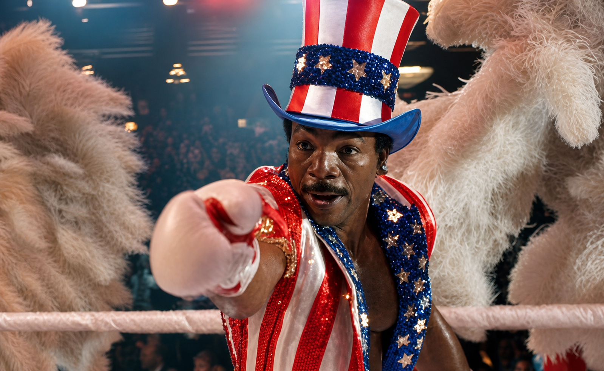
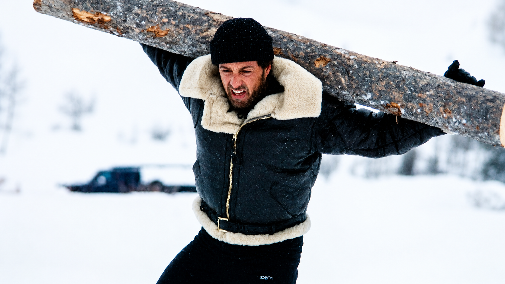
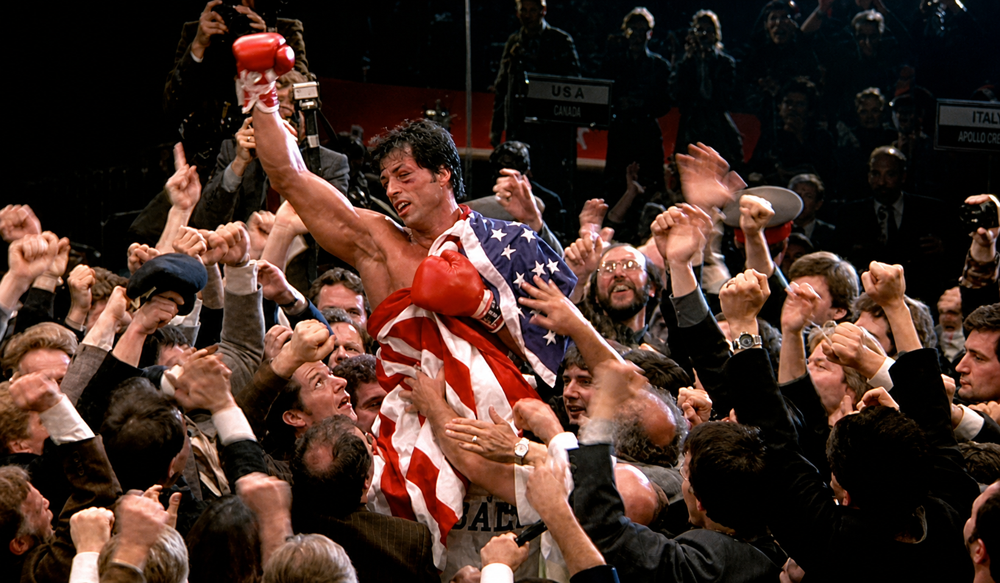

Film Review — Boxing — 1985
Directed by Sylvester Stallone
"Rocky IV is less a boxing film than a Cold War myth — spectacular, absurd, and strangely moving."
Rocky IV, released in 1985, is one of those films that is really impossible to watch without feeling like something bigger than boxing is at stake. Sylvester Stallone did not make a sports movie, he made a political statement dressed in boxing gloves, and the entire film is really built and constructed in a way to make you feel that from the opening frame and up until the final bell. George Orwell wrote in 1945 that international sport is "war minus the shooting" and it is hard to think of a film that proves Orwell's point more completely than Rocky IV itself.
After reading George Orwell's "The Sporting Spirit," it became clear to me that Rocky IV is a perfect example of what Orwell argues for. Orwell claims that international sport is "war minus the shooting" in which Rocky IV portrays this idea heavily throughout the movie and fight between Rocky Balboa and Ivan Drago. The fight between them is depicted as more than just a boxing match, and is really framed as a "war" or battle between the United States and the Soviet Union in which the film really does a great job at getting across with little effort to hide that. From the characters to the crowd reactions to the training sequences, everything in the film is in a way molded and shaped into showing that what is really being fought over is not a mere boxing title but national pride and ideological superiority between the U.S. and the Soviet Union.
One of the very first things that stood out when watching Rocky IV with Orwell's argument in mind is how openly political the film frames the fight, everything from outside of the ring to inside the ring. When Apollo Creed agrees to take on Ivan Drago in an exhibition match, Creed explicitly says "us versus them" which really shifts the focus from anything near a sporting event to something war-like. The American crowd at the Las Vegas exhibition all boos Drago very aggressively solely because of the Soviet Union in which he represents, despite Drago doing nothing to them. The same thing happens in reverse when Rocky travels to Moscow for the match and the Soviet crowd boos him just as loudly and aggressively. Soviet officials throughout the film also speak about the Americans as weak and inferior which really nails it in the idea that national pride is on the line for both sides, really solidifying the argument that international sports really is a "war minus the shooting".
The war-like stakes are also made clear in the emotional weight the film builds around the fight. When Adrian begs and cries for Rocky not to go to the Soviet Union, her fear does not read like a wife worried about a boxing match. It reads more like someone watching a loved one go off to war. That feeling of dread is reinforced by the training montage, which looks more like military preparation than athletic conditioning. These are not random creative choices. They are the film telling you exactly what kind of story it thinks it is telling.

The movie also uses technology in a great way to show the political tension between both sides which is something that really stood out. In the training montages, Drago trains in a very scientific environment that is filled with high tech machines of that time, medical monitoring equipment and computers all measuring his performance which puts Drago in a completely different light, making him appear as engineered rather than a human athlete who worked his way up. Rocky on the other hand trains completely differently and outdoors in the snow, chopping wood, hauling logs and running without any equipment or support. Rocky's training is built entirely on physical determination and willpower, completely contrasting Drago's training.
This contrast reflects the Cold War fear of Soviet technological advancement that was very real in 1985 since at that time the idea that the Soviet Union was using technology and resources to build superior soldiers and athletes was something a lot of Americans worried about. The film grabs that worry and anxiety and puts it directly on screen through the training sequences. Another point worth noting is how differently technology in sport reads today compared to what the film depicts, things like fitness trackers, heart rate monitors, and biometric data are all common tools that athletes use nowadays and nobody finds them threatening, but in Rocky IV that same kind of monitoring equipment is framed as something cold and dehumanizing due to Soviet tech portrayed as something to fear rather than something neutral. That fear had been building in American culture for decades before 1985 ever since the Soviet Union launched Sputnik in 1957, which is the first artificial satellite to orbit Earth, Americans had been living with the idea that the Soviets could out engineer them. That single event caused this widespread anxiety across the United States fueling fears that Soviet technological capability posed a direct threat to national security and that America really was falling behind in the most important competition of that time. By the time Rocky IV came out that anxiety had only deepened more so through decades of arms race building up, with both sides stockpiling nuclear weapons. The film really grabs all of that accumulated fear and compresses it into one character. Drago is not just a boxer in Rocky IV, he solely stands for what Americans in 1985 feared the Soviet system was capable of producing, which is a human being that is so optimized by technology and resources that he no longer reads as fully human at all. The most specific example of this is the moment the film displays Drago's punch force on screen as a number, and also how Drago's punches could kill Creed in the ring. At a press conference early in the film, Drago demonstrates a punch that registers at 1,850 PSI presented next to a caption noting that the average heavyweight boxer averages around 700 PSI. The Soviet official then states plainly that whatever he hits, he destroys. That choice turns a sports statistic into a threat display, the same way a government might publicize a missile test or a weapons capability, again depicting it as war-like instead of sports-like. The number is there to intimidate, not to inform, and works in the context of the film because it taps directly into the Cold War anxiety that the Soviet Union was building something the United States could not match, not just in terms of nuclear weapons or space tech, but not even the human body itself.

One of the biggest parts of what really makes Rocky IV work as a political film is how Sylvester Stallone chose to tell the story cinematically. The film heavily relies on the montage and music rather than character development, due to the rapid cutting between images and the usage of music to really drive that emotional tone into portraying it as more than just a sporting event but once again a "war minus the shooting". Vince DiCola's synthesizer driven soundtrack is one of the most distinctive choices in the film that helps portray that argument. The earlier Rocky movies were scored by Bill Conti who uses a more warm and organic orchestral sound, while DiCola's sounds completely different choosing to lean towards a more cold, pulsing synthesizer that makes the film feel more futuristic and in a sense militaristic. That choice matches the tone of the film in a perfect manner because it is not meant to feel like a warm underdog story but a high stakes geopolitical war-like confrontation, reinforcing how even the music signals that something bigger than boxing is taking place in the film.
The cinematography also follows the same logic as Drago's training environment is put in a cold lighting where it is lit in cold blue and institutional whites, compared to Rocky's outdoor training which is shot with a warmer golden light that feels in a way heroic, warm and humane. These are smartly shot so the audience picks up on that without even thinking, similar to how Drago looks like a Soviet institution and Rocky looks like the American hero. Overall the camera is really in a way already telling the audience who to root for before a single punch is ever thrown.
What is worth looking at is the montage format itself which is a political choice and not just for style. Montages by nature skip over doubt, hesitation and complexity, but moves fast and hits emotionally not giving you time to question what is being shown. For a film like that that is trying to sell you a very specific version of the Cold War where one side is human, determined, and the other is cold and mechanical, that format is exactly what is done and needed. If Stallone slowed down and given Drago more scenes, dialogue, and character, the whole argument the film is making would fall apart and crumble. The montage keeps the ideology cleanly portrayed. It also connects Rocky IV to a longer tradition of wartime filmmaking where image and music do the main heavy lifting that argument cannot, since the goal is to make you feel something so strongly that the conclusion already feels obvious, so by the time Rocky is running up that mountain, the film has already decided who the good guys are and the editing really reinforces into you to ensure that you feel it emotionally before your brain really even catches up in a sense.
Another one of the most interesting moments in Rocky IV is not the actual knockout but what happens with the crowd during the Moscow fight. At the start of the fight, the Soviet audience is firmly only behind and supportive of Drago, all booing Rocky, but as the fight goes on and Rocky keeps on fighting with all he's got, refusing to go down, something shifts in the audience. By the final rounds the Soviet crowd is suddenly all chanting Rocky's name and the Soviet officials watching in their seats look noticeably uncomfortable.
This crowd shift can be seen as the ideological argument the film has been building towards the entire time, where the qualities Rocky represents, things like determination, resilience and refusing to quit are so universally appealing to everyone that even a Soviet crowd can't help but respond to them. The idea was that underneath all that political programming ordinary people on both sides would eventually recognize and respond to the basic human values. The crowd turning and supporting Rocky is the film saying that ideology being said out loud.
What makes this crowd shift really work so well on screen is that the film does it visually instead of telling you how it is happening. You see individual Soviet faces in the crowd slowly changing, people who booed Rocky start leaning forward, exchanging glances and eventually standing to root for Rocky, showing it all organically happening making the argument feel stronger than dialogue could. Even Drago by the end of the fight turns on his own telling them he fights for himself rather for them, which mirrors what the crowd does, both in a way rejecting the idea that a person has to be defined by the system they originate from, pushing that idea that human instinct and basic values cut through political loyalty when pushed far enough.

Rocky IV is not a great film by conventional standards, the characters are thin, the plot is minimal, and the dialogue is often blunt. Drago's most famous line, "if he dies, he dies" says everything the film wants you to know about the Soviet Union in those very five words, which is not exactly intricate storytelling. On the other hand judging Rocky IV by the standards of realistic drama misses what it actually is, which is a piece of political myth, a document of what the Cold War era Americans feared and truly believed, and as an example of how sport gets used to stage national narratives, this film really did that perfectly and effectively.
What Rocky IV really reveals is not about boxing at all but about what Americans in 1985 needed to believe about themselves. The film is essentially a fantasy dressed up as a sports movie where American values are not just defended but shown to be so universally true that even a Soviet crowd cannot resist them by the end. Rocky does not just beat Drago, he wins the crowd over and in the logic of the film that really is the bigger and true victory.
Orwell said that international sports does not create goodwill between nations, but hostility and reinforces the idea that athletic competition is really just national dominance. Rocky IV embraces that entirely, where the fight between Rocky and Drago was never just a boxing match and the movie is honest about that in a way that I would say a lot of sports films are not. So overall, whether that makes it good cinema is debatable, but it can be said with full confidence that it makes it one of the most revealing sports films ever made about the relationship between sport, politics and national identity.